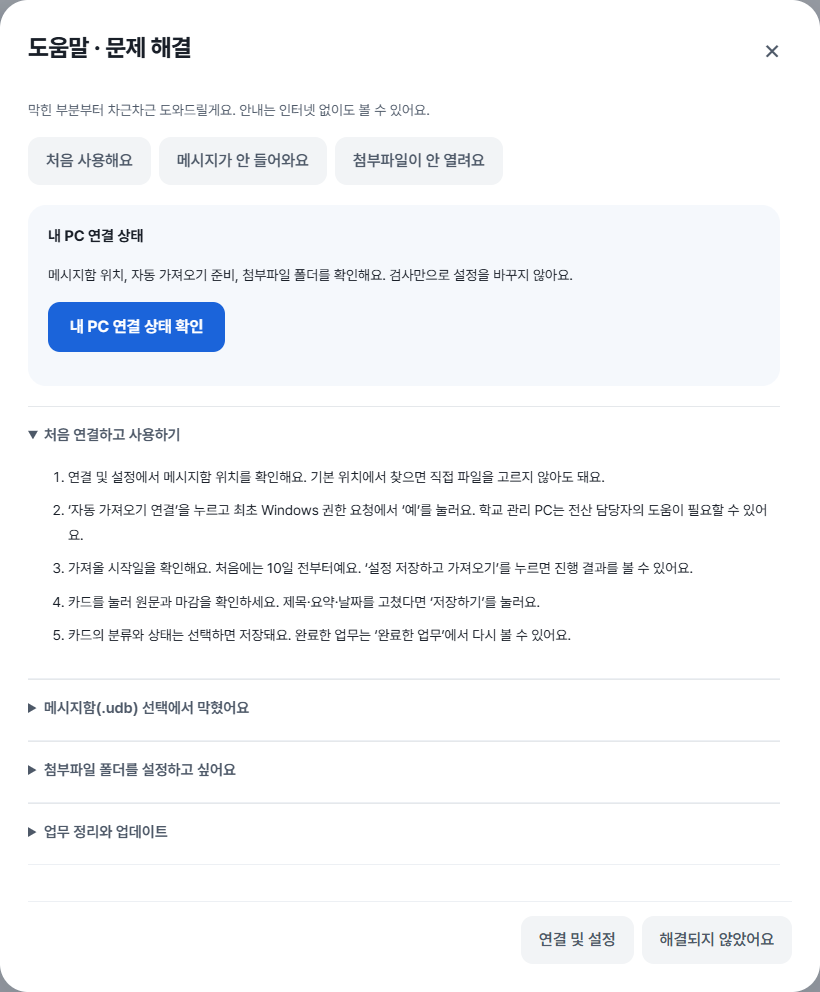
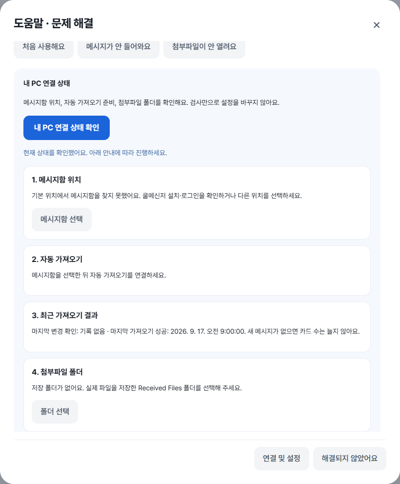
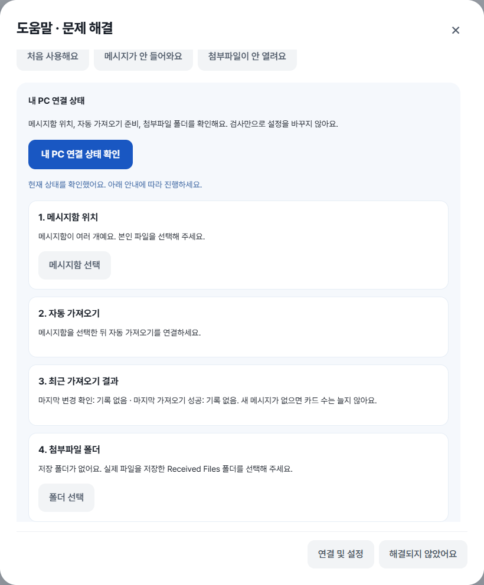
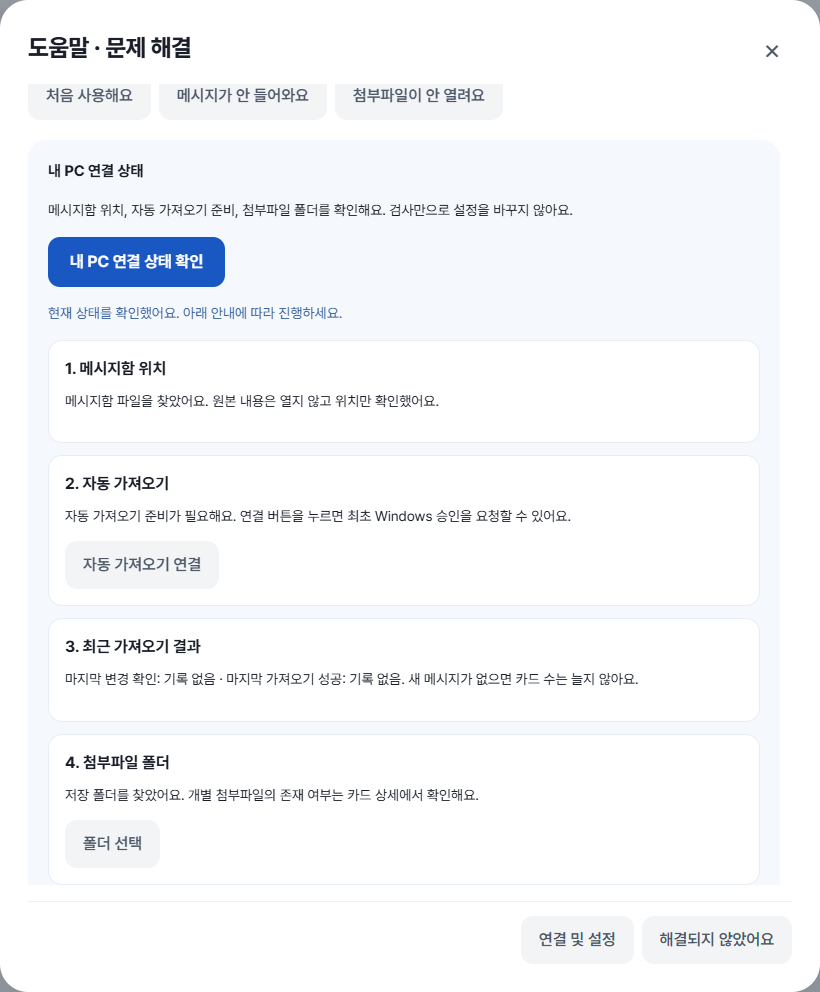
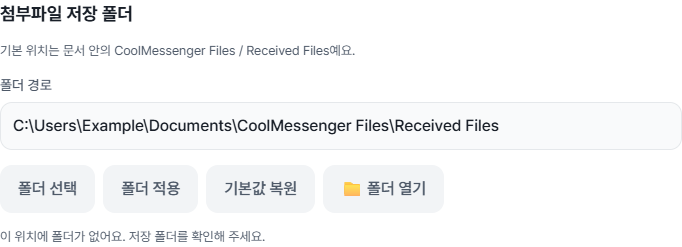
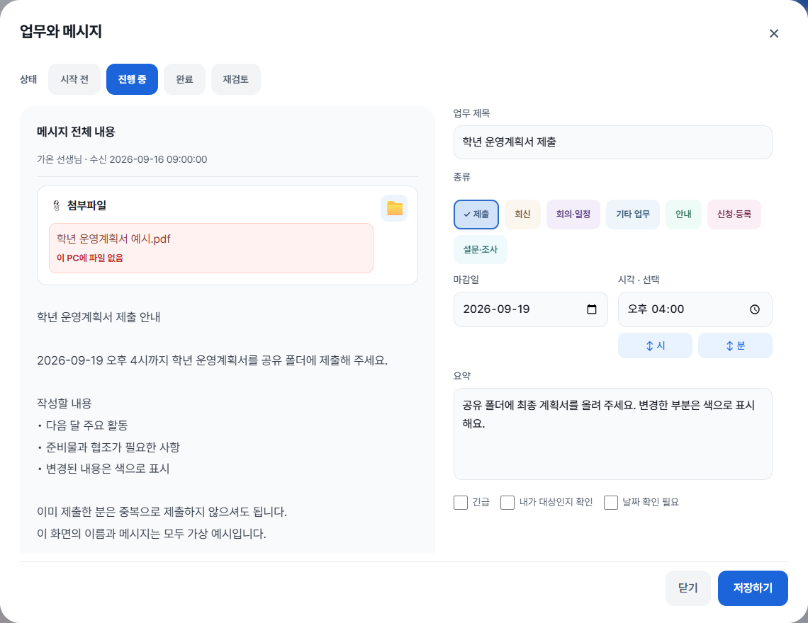
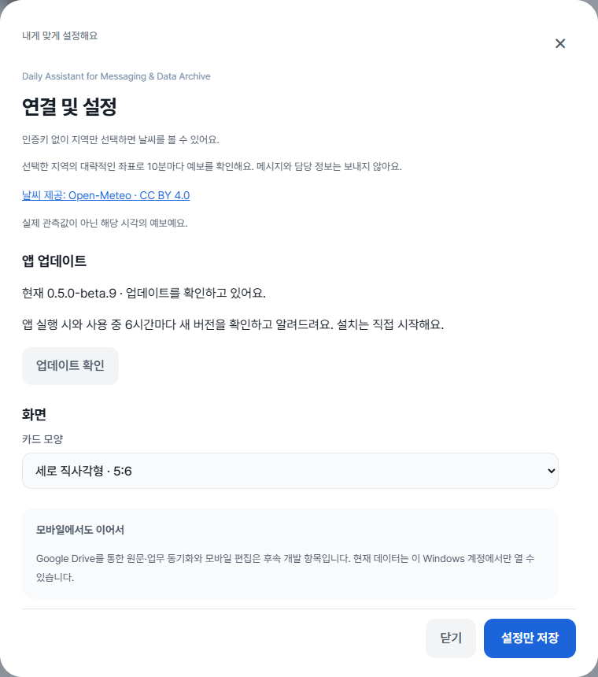

Daily Assistant for Messaging & Data Archive
막힌 부분부터,
함께 해결해요.
메시지함 연결부터 하루의 업무 정리까지.
화면을 보면서 하나씩 따라 해 보세요.
담다 Beta 0.5.0-beta.9 기준 · 2026.09.17
모든 화면은 가상 데이터와 예시 경로예요. 연결 결과는 상황별 예시이며 실제 권한 요청이나 메시지 백업을 실행해 촬영하지 않았어요.
01 · 처음 시작하기
먼저 내 PC의 연결 상태를 확인해요.
- 담다를 설치하고 개인화를 마치세요.
담당 학년과 업무를 선택하고, 언제부터 메시지를 정리할지 정해요. 시작일 기본값은 첫 설정 시점의 10일 전이에요. 나중에 설정에서 바꿀 수 있어요.
- 왼쪽 ‘도움말 · 문제 해결’을 누르세요.
‘내 PC 연결 상태 확인’을 누르면 메시지함 위치, 자동 가져오기 준비, 최근 수집 결과, 첨부파일 폴더를 확인해요. 검사만으로 설정을 바꾸지는 않아요.
- 결과 아래의 해결 버튼을 누르세요.
메시지함 선택이나 자동 가져오기 연결 등 지금 필요한 동작으로 바로 이어져요. 메뉴가 없다면 먼저 업데이트하세요.

02 · 메시지 연결
‘이름.udb’에서 멈추셨나요?
새 파일을 만들거나 기존 파일의 이름을 바꿀 필요가 없어요. 쿨메신저가 이미 저장해 둔 본인의 메시지함을 선택하면 돼요.
- 자동으로 찾았는지 확인하세요.
‘메시지함 파일을 찾았어요’가 나오면 파일을 직접 선택할 필요가 없어요. 아래의 자동 가져오기 단계로 진행하세요.
- 파일이 없으면 설치·로그인 상태를 확인하세요.
쿨메신저를 설치하고 본인 계정으로 로그인했는지 확인하세요. 일반적인 위치는 현재 Windows 사용자 폴더의
AppData → Local → CoolMessenger → memo예요. 탐색기 주소창에%LOCALAPPDATA%\CoolMessenger\memo를 입력해 열 수도 있어요. 담다의 ‘메시지함 선택’에서 해당 폴더의 .udb 파일을 선택하세요. 다른 위치에 저장했다면 그 위치를 선택하세요. - 여러 개이면 본인 파일을 선택하세요.
이름이 비슷하다고 임의로 고르지 마세요. 본인 메시지함을 구분하기 어렵다면 학교 전산 담당자에게 확인하세요. 파일을 지우거나 이동할 필요는 없어요.


파일을 찾은 뒤에는 자동 가져오기를 연결해요.
- ‘자동 가져오기 연결’을 누르세요.
최초 Windows 권한 요청에서 ‘예’를 선택해요. ‘아니요’를 선택했거나 창을 닫았다면 연결이 완료되지 않으므로 다시 시도하세요.
- 연결 준비와 실제 수집 결과를 구분하세요.
연결 준비가 끝나면 메시지를 가져올 수 있어요. ‘지금 가져오기’를 누르거나 설정에서 시작일을 정한 뒤 ‘설정 저장하고 가져오기’를 누르세요.
- ‘마지막 가져오기 성공’을 확인하세요.
‘마지막 변경 확인’은 새 변경을 살펴본 시각이에요. 새 메시지가 없으면 카드 수가 늘지 않을 수 있어요. 가져올 기간과 업무 필터, ‘안내 모아보기’도 확인하세요.

승인했는데도 연결되지 않아요.
학교의 관리 정책이나 Windows 계정 권한 때문에 등록이 제한될 수 있어요. 반복해서 승인하기보다 앱에 표시된 오류 문구를 확인하고 전산 담당자에게 도움을 요청하세요. 원본 메시지함을 수정하거나 삭제하지 마세요.
접근 권한이 없다고 나와요.
파일이 없는 것과 접근이 막힌 것은 달라요. 다른 사람의 메시지함을 선택하지 않았는지 확인하고, 본인 폴더도 열 수 없다면 전산 담당자에게 접근 권한을 확인해 주세요.
가져오기 중에 멈추거나 오류가 나요.
도움말에서 최근 가져오기 결과를 확인하세요. 수집 중이면 완료를 기다린 뒤 다시 검사하세요. 백업 실패, 응답 시간 초과, 지원하지 않는 데이터 구조는 해결 방법이 다르므로 표시된 오류 문구로 문의해 주세요. 지원하지 않는 구조를 해결하려고 원본 파일을 직접 수정하지 마세요.
03 · 첨부파일
경로를 입력하지 말고, 폴더를 선택하세요.
- 연결 및 설정 → 첨부파일 저장 폴더로 이동하세요.
기본값은 Windows의
문서 → CoolMessenger Files → Received Files예요. 문서를 OneDrive로 옮겨 사용하는 경우 그 위치를 따라가요. - ‘폴더 선택’을 누르세요.
쿨메신저에서 받은 파일들이 실제로 저장된 Received Files 폴더를 선택하세요. 상위 CoolMessenger Files 폴더나 개별 파일을 선택하는 것이 아니에요. 선택하면 바로 적용되고, 취소하면 기존 설정이 유지돼요.
- ‘폴더 열기’로 위치를 확인하세요.
기본 위치로 되돌리고 싶으면 ‘기본값 복원’을 누르세요. 경로를 직접 입력했다면 ‘폴더 적용’을 눌러야 반영돼요.
- 카드에서 첨부파일을 열어 보세요.
카드를 누른 뒤 첨부파일명을 누르면 열려요. 오른쪽 📁 버튼은 저장 폴더를 열어요.

아직 첨부파일을 저장하지 않았거나 이동·삭제했을 수 있어요. 쿨메신저에서 파일을 직접 저장한 뒤 실제 위치를 확인하세요. 담다는 누락된 파일을 서버에서 자동 다운로드하지 않아요.
같은 이름이어도 파일 크기가 다르면 잘못된 파일을 여는 일을 막기 위해 열지 않아요. 지원하지 않는 파일 형식도 별도로 표시해요.
04 · 매일 사용하는 방법
훑어보고, 확인하고, 완료하세요.
- 카드에서 할 일을 훑어보세요.
최근 받은 메시지부터 모여요. 분류와 마감일, 요약을 보고 필요한 카드를 선택하세요. 원문이 더 길면 카드의 내용 더 보기 안내로 알 수 있어요.
- 원문을 확인하고 수정하세요.
제목·요약·날짜를 고쳤다면 상세 창의 ‘저장하기’를 눌러요. 자동 정리가 틀릴 수 있으니 대상과 기한을 확인해 주세요. 확인이 필요한 날짜는 제안 날짜일 수 있어요.
- 카드의 분류와 상태를 빠르게 바꾸세요.
분류 배지를 누르면 다른 분류로 변경할 수 있어요. 카드의 상태 선택과 완료 버튼은 처리 결과를 저장해요. 상세 창의 다른 입력을 수정했다면 ‘저장하기’도 눌러 주세요.
- 끝낸 일은 ‘완료한 업무’에서 찾으세요.
완료한 시각을 기록하고 최근 완료순으로 보여줘요. 다시 진행할 일은 상태를 바꿔 되돌릴 수 있어요. 안내는 별도로 확인 처리해요.
- 검색과 달력으로 필요한 일만 보세요.
제목·보낸 사람·마감일로 검색하고 분류와 정렬을 활용하세요. 달력의 점은 해당 날짜의 남은 업무를 나타내요. 파랑은 일반, 빨강은 긴급, 빨간 테두리는 제출, 보라는 회의·일정이에요.

05 · 업데이트
기존 업무를 유지하며 새 버전으로.
- 먼저 편집 중인 내용을 저장하세요.
왼쪽 메뉴 아래의 버전 표시 또는 연결 및 설정 → 앱 업데이트로 이동하세요.
- ‘업데이트 확인’ → ‘자동 업데이트’를 누르세요.
다운로드와 파일 검증 후 설치를 이어가요. Windows 확인 창이 나타나면 내용을 확인하고 진행하세요. 설치 과정에서 담다가 종료되고 다시 시작될 수 있어요.
- 업데이트 후 버전을 확인하세요.
이번 안내 기준은 0.5.0-beta.9예요. 기존 업무를 지우거나 담다를 먼저 삭제할 필요는 없어요.

beta.9부터는 새 수집을 잠시 멈추고, 이미 진행 중인 가져오기는 마친 뒤 설치를 이어가요. 기다리지 않으려면 ‘나중에 설치’를 누르세요. 설치 창에서 취소하거나 실패해도 ‘업데이트 다시 시도’로 이어갈 수 있어요.
이전 버전에서 이미 설치가 실패하고 버튼이 비활성화됐다면, 오류 창과 설치 창을 닫고 메시지 가져오기가 끝날 때까지 기다리세요. 담다의 ‘앱 종료’를 누른 뒤 아래의 이번 버전 설치 파일을 직접 실행해 주세요. 기존 업무를 삭제할 필요는 없어요. 가져오기가 계속 끝나지 않으면 강제로 종료하지 말고 표시된 오류를 알려주세요.
그래도 해결되지 않았다면
어느 단계에서 막혔는지 알려주세요.
앱의 ‘오류 보내기’에서 상황을 적고 보고서를 준비한 뒤 GitHub에서 확인하고 제출해 주세요. GitHub 로그인이 필요하며 제출한 이슈는 공개됩니다.
- 앱 버전과 문제가 생긴 단계
- 화면에 표시된 오류 문구
- 무엇을 눌렀을 때 발생했는지
실제 메시지, 이름, 학교 정보, 개인 폴더 경로가 보이는 화면은 그대로 올리지 마세요. 진단 정보에는 원문과 이름을 자동으로 넣지 않지만, 직접 적은 설명과 첨부 사진도 확인해 주세요.